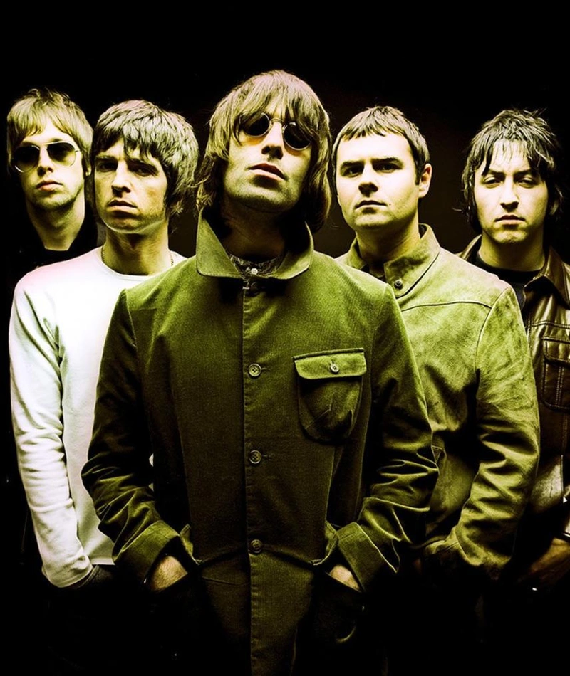

Oasis
Years Active: 1991–2009, 2024–present
Genre/s: Rock, Britpop
Label/s: Creation, Epic, Columbia, Sony, Big Brother, Reprise
Members: Liam Gallagher, Noel Gallagher, Paul Arthurs, Gem Archer, Andy Bell
Oasis are an English rock band formed in Manchester in 1991. The group initially consisted of Liam Gallagher (lead vocals), Paul "Bonehead" Arthurs (guitar), Paul "Guigsy" McGuigan (bass guitar) and Tony McCarroll (drums). Liam asked his older brother Noel Gallagher (lead guitar, vocals) to join as a fifth member a few months later to finalise their formation. Noel became the de facto leader of the group and took over the songwriting duties for the band's first four albums. They are regarded as the most globally successful group of the Britpop era and one of the most influential rock bands of all time.
Oasis signed to independent record label Creation Records in 1993 and released their record-setting debut album Definitely Maybe (1994), which topped the UK Albums Chart and quickly became the fastest-selling debut album in British history at the time. The following year, they released follow up album (What's the Story) Morning Glory? (1995) with new drummer Alan "Whitey" White in the midst of a highly publicised chart rivalry with peers Blur, dubbed by the British media as the "Battle of Britpop". Spending ten weeks at number one on the British charts, (What's the Story) Morning Glory? was also an international chart success and became one of the best-selling albums of all time, the UK's third-best-selling album, and the UK's best-selling album of the 1990s. The Gallagher brothers featured regularly in tabloid newspapers throughout the 1990s for their public disputes and wild lifestyles. In 1996, Oasis performed two nights at Knebworth for an audience of 125,000 each time, the largest outdoor concerts in UK history at the time. In 1997, Oasis released their highly anticipated third album, Be Here Now, which became the fastest-selling album in UK chart history selling 696,000 copies in its first week.
Founding members Arthurs and McGuigan left in 1999 during the recording of the band's fourth album, Standing on the Shoulder of Giants (2000). They were replaced by former Heavy Stereo guitarist Gem Archer on guitar and Ride guitarist Andy Bell on bass guitar. White departed in 2004, replaced by touring member Zak Starkey. Oasis released three more albums in the 2000s: Heathen Chemistry (2002), Don't Believe the Truth (2005) and Dig Out Your Soul (2008) which all reached number one in the UK album charts with the last two releases of their original run being regarded as a return to form for the band. The group abruptly disbanded in 2009 after the sudden departure of Noel Gallagher. The remaining members of the band continued under the name Beady Eye until their disbandment in 2014. Both Gallagher brothers have since had successful solo careers. Oasis reformed in 2024 and concurrently announced the Oasis Live '25 Tour, which they embarked on the following year. The band currently consists of Liam and Noel Gallagher, Bonehead, Archer and Bell.
As of 2026, Oasis have sold over 100 million records worldwide, making them one of the best-selling music artists of all time. They are among the most successful acts in the history of the UK singles chart and the UK Albums Chart, with eight UK number-one singles and eight UK number-one albums. The band also achieved three Recording Industry Association of America (RIAA)-certified Platinum albums in the US. They won 17 NME Awards, nine Q Awards, four MTV Europe Music Awards, one MTV Japan Music Award, two Ivor Novello Awards for songwriting, three World Music Awards, two UK Music Video Awards and seven Brit Awards, including one in 2007 for Outstanding Contribution to Music and one for the "Best Album of the Last 30 Years" for (What's the Story) Morning Glory? and in 2026 after their successful Live '25 tour it was announced, Noel Gallagher would receive the "Songwriter of the Year" at the 2026 Brit Awards. They were also nominated for three Grammy Awards. They were inducted into the Rock and Roll Hall of Fame in 2026.